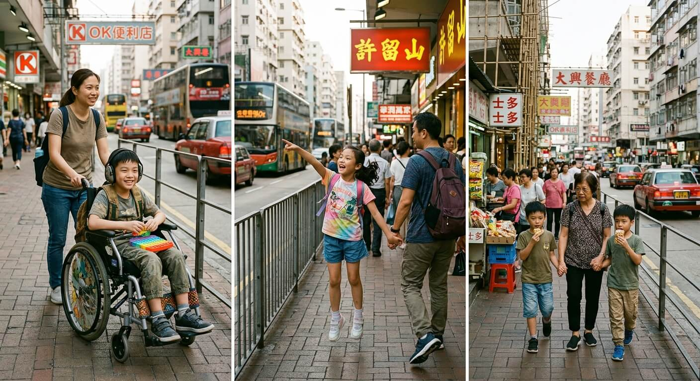
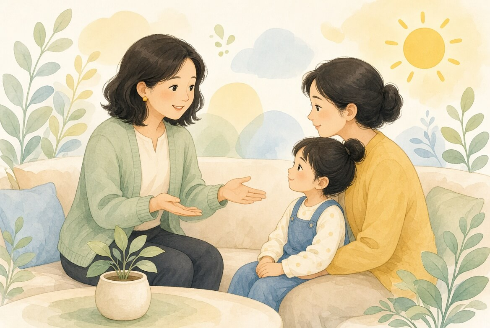

電子讀本:兒童心理社會發展與正向親職
正在載入電子書…
關於我
社工怎麼陪你走這段路。
資源庫
ASD、ADHD、SpLD、ID 的特徵與應對盲點。
壓力小檢視
家長與老師都可用的自我反思。
關於我

香港註冊社工
Mabel
我是Mabel Yeung，我是香港社工，作為一名具備香港註冊社工與註冊護士（普通科）雙重專業資格的實務工作者，我擁有豐富的跨專業協作、個案管理及社區支援經驗。在親職教育與親子關係方面，我曾策劃實證導向的正向管教與SEN家長工作坊，善用情緒教練及正向心理學，協助家長建立良好的溝通與契約制度，有效化解親子衝突並增強教養信心。面對家庭危機議題，我掌握認知行為治療（CBT），陪伴家庭度過關係上的變化。在提升家庭抗逆力上，我透過推廣正向思維、探索個人優勢及建立「同路人」互助網絡，協助重塑生活節奏與內在韌性。針對社交技巧訓練與情緒管理，我曾為兒童及青少年設計壓力辨識與解難領導力小組，精準提升其社交互動與情緒調節能力。
家長輔導
家校會議
行為支持
照顧者休息
資源庫
圖文認識教育局常見 SEN 類別。每個孩子都不一樣；下列是傾向與常見盲點，不是診斷清單。
其他亦常見的類別
言語障礙、聽障、視障、肢體傷殘同樣需要環境調整，而不只是「補救練習」。香港學校多用三層支援：優質課堂教學、小組增補、以及個別加強。
言語障礙 SLI
聽覺受損 HI
視覺受損 VI
肢體傷殘 PD
社交技巧訓練小組
由社工帶領的社交技巧訓練小組，不是普通遊戲小組。它是一個有結構的練習場，幫孩子把內心世界和學校、社區的社交期望接上。
社區交流
示範討論區：留言只留在你這部裝置的這一頁，不會上傳。真正上線前記得加上私隱聲明與審核。
照顧者壓力小檢視
給家長與老師的反思工具，不是臨床評估，也不能代替見面輔導。若你已有傷害自己的想法，請立刻聯絡下面的 24 小時熱線，或到急症室。
需要找人時
- 社會福利署熱線 2343 2255
- 明愛向晴軒家庭危機 18288
- 撒瑪利亞會多語熱線 2896 0000 · 撒瑪利亞防止自殺會 2389 2222 · 生命熱線 2382 0000
- 醫院管理局精神健康專線 2466 7350
- Education Bureau / 教育局 · Social Welfare Department / 社會福利署